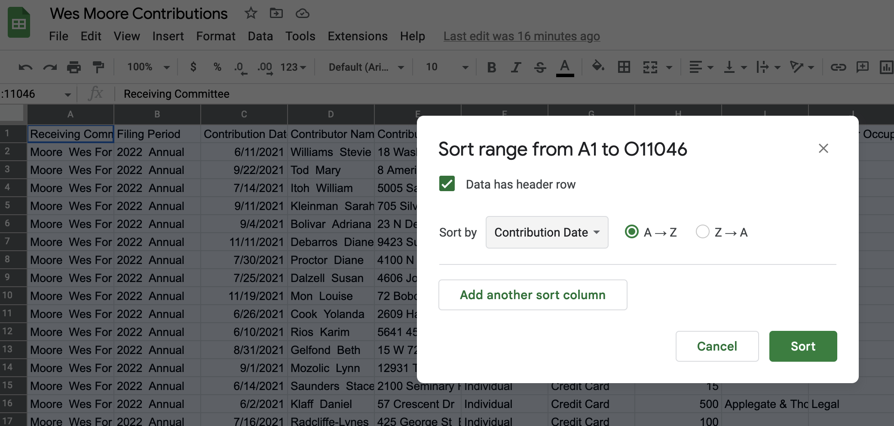

7 Sorting and filtering to find stories
7.1 A sorting miracle
When Stephen Neukam - who was sitting in this class a year ago - wanted to find out who was funding candidates for Maryland’s open governor’s seat this year, he downloaded data from the State Board of Elections that listed contributions to the wide array of hopefuls seeking to replace Larry Hogan in Annapolis.
He wasn’t sure at first what he was looking for, so he started the way that many reporters do with data: by sorting and filtering. Were there outliers in the list of contributions, and which candidates were getting their money from unusual (non-Maryland) sources?
Neukam quickly found his story: in the race to be governor, Maryland candidates, and in particular Wes Moore, a first-time Democratic candidate, were raising millions of dollars from out of state donors.
The story, “Millions in out-of-state donations help fuel high-profile Maryland Democratic governor candidates” helped explain where candidates were going to fund one of the most contested primaries in recent history (Moore ended up winning).
7.2 Sorting and filtering as a reporting tool
Sorting and filtering can:
- Narrow your focus to specific items that you want to examine in your story.
- Show you rows containing the highest and lowest values of any column. That can be news or it can be errors or other problems with the data.
- Let you answer quick “how many?” questions, with a count of the rows that match your criteria. (In the next lesson, you’ll see that pivot tables, or group-by queries, are much more powerful for this in most cases.)
7.3 Example data
::: {.alert .alert-info } - Data from the State Board of Elections for use in this tutorial - Documentation from the SBOE’s site :::
The data for this is from the Maryland State Board of Elections’s Campaign Finance Database. There are a couple of caveats:
It includes money raised as of Jan. 12, 2022, which covers all of 2021.
These are self-reported by campaigns, and subject to amendment in case of errors or omissions.
The original data download link for Wes Moore’s contributions is https://github.com/stephenneukam/CNS_Annapolis/raw/main/Campaign_finance/Moore_ContributionsList.csv. Download it to your computer and then, in a browser, type sheet.new to create a new Google Sheet. From there, use File -> Import and choose “Upload” and select the file on your computer. Click the “Import Data” button when it appears. Then give your sheet a name, like “Wes Moore Contributions”.
It’s a good example set for us because it’s been used as the basis of Neukam’s story and it has at least one of each data type that we plan to deal with in Google Sheets or Excel. And, critically, the first row contains headers, not data. Always have headers, even if you have to add them.
7.4 Understanding data types
When you open the spreadsheet, the first thing to notice is its granularity. Unlike Census or budget spreadsheets, this is a list capturing specific characteristics of each contribution. Each column has the same type of data from top to bottom. Those types are:
Text. Text or “character” columns can come in long or short form. When they are standardized (the values can contain only one of a small list of values), they’re called “categorical”. If they’re more free-form, they’re might be called “free text”. The computer doesn’t know the difference, but you should. The Post data has examples of both. In spreadsheets, text is left-justified (they move toward the left of the cell and will line up vertically at the beginning)
Numbers. These are pure numbers with no commas, dollar signs or other embellishments. In Google Sheets these can be formatted to look like numbers in different ways, but underneath they’re just numbers. Adding up a column of numbers that has a word in it or has missing values will just be ignored. It will trip up most other languages. These are right-justified, so the last digit is always lined up vertically.
Logical: This is a subset of text. It can take one of only two values – yes or no, true or false. There is no “maybe”.
Date and times: These are actual dates on the calendar, which have magical properties. Underneath, they are a number. In Google Sheets and Excel, that number is the number of days since Jan. 1, 1900.1 They can also have time attached to them, which is a fraction of a day. What this means is that the number 44,536.5 is really Dec. 6, 2021 at noon. In Sheets, you use a format to tell the spreadsheet how you want to see the date or time, just the way you look at dollar values with commas and symbols. (If you get a spreadsheet with a lot of dates of 1/1/1900, it means there is a 0 in that column, which is sometimes a fill-in for “I don’t know.”)
Here’s a picture of a date that is shown in a variety of formats.

All of these are the same, underlying value – the number at the left. Notice that all of these are right-justified.
This means that when you see “Friday, December 10”, the computer sees 44540.87431. When you put the dates in order, they won’t be alphabetized with all of the Fridays shown together. Instead, they’ll be arranged by the actual date and time.
It also means that you can compute 911 response times even when it crosses midnight, or or compute the someone’s age today given a date of birth. Keeping actual calendar dates in your data will give it much more power than just having the words. (Sheets and Excel use the 1st of the month as a stand-in for an actual date when all you know is the month and year.)
7.4.1 Sorting rows
Sorting means rearranging the rows of a data table into a different order. Some reporters take a conceptual shortcut and call this “sorting columns”. That thinking will only get you into trouble – it lets you forget that you want to keep the rows in tact while changing the order in which you see them. In fact, in other languages it’s called “order by” or “arrange” by one or more columns – a much clearer way to think of it.
To sort in Google Sheets, first highlight the entire sheet by clicking on the button above the first row and to the left of the first column. So, between the 1 and the A. Then, look for the sort options under the Data drop-down menu at the top of your screen, and choose “Sort Range” and then “Advanced range sorting options”. Trust me, this is how you want to do it. Check the box that says “Data has header row” and Sort by Contribution Date. In this case, sorting from A to Z gives you a list of the contributions in chronological order.

Adding fields to the sort
Adding more columns to the sort box tells Sheets what to do when the first one is the same or tied. For example, sorting first by date then by amount gives you a list that shows all of the contributions by date in sequence:

7.4.2 Filtering
Filtering means picking out only some of the rows you want to see based on a criteria you select in a column. Think of it as casting a fishing net – the more filters you add, the fewer fish will be caught.
To turn on filters in Google Sheets, go to Data -> Create a filter. It will add small down arrows to each column in the first row, another reason why headers are crucial. You can filter by multiple columns, and each filter you select adds more conditions, narrowing your net.
To find contributions of $5,000, use the drop-down menu under Contribution Amount to select it and hit “OK”.
When you do this, notice that the drop-down arrow has turned into a solid green funnel and that any rows that don’t match your filter are hidden.

This method works for small-ish and simple-ish columns. If your column has more than 10,000 different entries, such as names or addresses, only the first 10,000 will be considered. We only caught these for stories when someone did a fact-check using a different method of filtering. If your column has a lot of distinct entries, use option that says “Choose One”, and then use the “Contains” option. Better yet, don’t use filtering for counting things at all.
Add more filters to narrow down your list of cases even more. For example, if you wanted to see $5,000 contributions from individuals, you would choose “Individual” under Contributor Type:

Different kinds of filters
There are several options under the filter drop-down menu under “Filter by condition”, and you also can type values into a search box to try and filter that way (the latter option is best for text columns). There also is a “Filter by color” option. My opinion: don’t do this.
 ## FAQ
## FAQ
How do I turn off all of my filters
In the data tab, chose “Remove filter” to remove all of the filters.
Each language deals with dates and times a little differently. We’ll see how R does it later on. But just know that dates can be tricky because of these differences and time is even more tricky↩︎